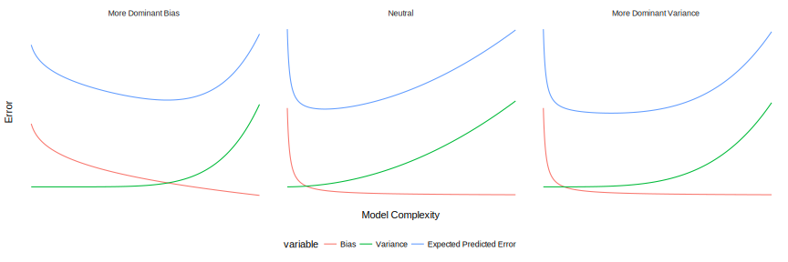
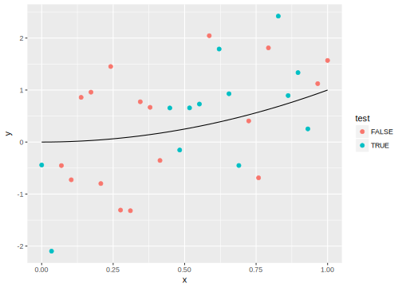
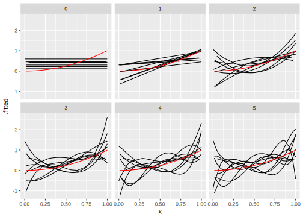
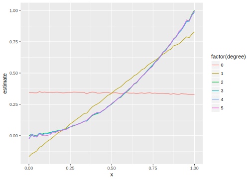
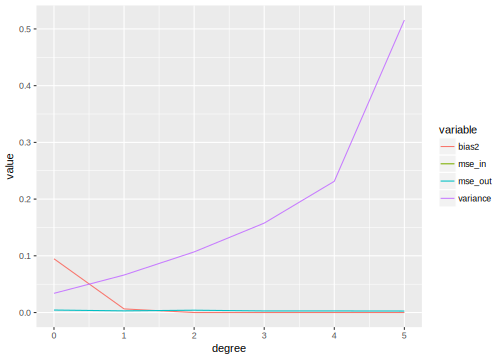

Chapter 6 Prediction
Prerequisites
library("tidyverse")
library("broom")
library("jrnoldmisc")You will need to install jrnoldmisc with
devtools::install_github("jrnold/jrnoldmisc")6.1 Prediction Questions vs. Causal Questions
Prediction vs. Causal questions can be reduced to: Do you care about \(\hat{y}\) or \(\hat{beta}\)?
Take a standard regression model, \[ y = X \beta + \epsilon . \] We can use regression for prediction or causal inference. The difference is what we care about.
In a prediction prediction problem we are interested in \(\hat{y} = X \hat{\beta}\). The values of \(\hat{\beta}\) are not interesting in and of themselves.
In a causal-inference problem we are are interested in getting the best estimate of \(\beta\), or more generally \(\partial y / \partial x\) (the change in the response due to a change in x).
If we had a complete model of the world, then we could use the same model for both these tasks. However, we don’t and never will. So there are different methods for each of these questions that are tailored to improving our estimates of those.
6.2 Why is prediction important?
Much of the emphasis in social science is on “causal” questions, and “prediction” is often discussed pejoratively. Apart from the fact that this belief is often due to a deep ignorance of statistics and the philosophy of science and a lack of introspection into their own research, there are a few reasons why understanding prediction questions.
6.3 Many problems are prediction problems
Causal inferential methods are best for estimating the effect of a policy intervention. Many problems in the political science are discussed as if they are causal, but any plausible research question is predictive since there is no plausible intervention to estimate. I would place many questions in international relations and comparative politics in this realm.
6.3.1 Counterfactuals
The fundamental problem of causal inference is a prediction problem. We do not observe the counterfactuals, so we must predict what would have happened if a different treatment were applied. The currently developed causal inference methods are adapting methods and insights from machine learning into these causal inference models.
6.3.2 Controls
The bias-variance trade-off is useful for helping to think about and choose control variables.
6.3.3 What does overfitting mean
The term overfitting is often informally used. It has no meaning outside of prediction.
6.4 Prediction vs. Explanation
Consider this regression model, \[ y = \beta_1 x_1 + \beta_2 x_2 + \epsilon \] where \(y\) is a \(n \times 1\) vector and \(\epsilon\) is a \(n \times 1\) vector, \[ \epsilon_i \sim \mathrm{Normal}(0, \sigma^2). \]
We will estimate two models on this data and compare their predictive performance:
The true model, \[ y = \beta_0 + \beta_1 x_1 + \beta_2 x_2 + \epsilon \] and the underspecified model, \[ y = \beta_0 + \beta_1 x_1 + \epsilon \]
We will evaluate their performance by repeatedly sampling from the true distribution and comparing their out of sample performance.
Write a function to simulate from the population. We will include the sample size, regression standard deviation, correlation between the covariates, and the coefficients as arguments.
size: sample sizesigma: the standard deviation of the population errorsrho: the correlation between \(x_1\) and \(x_2\)beta: the coefficients (\(\beta_0\), \(\beta_1\), \(\beta_2\))
sim_data <- function(size = 100, beta = c(0, 1, 1),
rho = 0, sigma = 1) {
# Create a matrix of size 1
dat <- jrnoldmisc::rmvtnorm_df(size, loc = rep(0, 2), R = equicorr(2, rho))
# calc mean
dat$fx <- model.matrix(~ X1 + X2, data = dat) %*% beta %>%
as.numeric()
dat$y <- dat$fx + rnorm(size, 0, sigma ^ 2L)
dat$y_test <- dat$fx + rnorm(size, 0, sigma ^ 2L)
dat
}The output of sim_data is a data frame with size rows and columns
X1, X2: The values of \(x_1\) and \(x_2\)fx: The mean function \(f(x) = \beta_0 + \beta_1 x_1 + \beta_2 x_2\)y: The values of \(y\) in the sample that will be used to train the model.y_test: Another draw of \(y\) from the population which will be used to evaluate the trained model.
head(sim_data(100))## # A tibble: 6 x 5
## X1 X2 fx y y_test
## <dbl> <dbl> <dbl> <dbl> <dbl>
## 1 -0.616 0.721 0.105 -2.19 -0.0293
## 2 -0.728 -1.12 -1.85 -1.84 -2.07
## 3 1.05 0.793 1.85 0.809 -0.250
## 4 0.501 -0.931 -0.429 -0.203 -0.947
## 5 0.944 -0.152 0.792 1.46 1.39
## 6 -0.509 -0.290 -0.799 0.362 -0.664For each training and test samples we draw we want to
- fit the true model using
y - evaluate the prediction accuracy of the true model on
y_test - fit the underspecified model using
y - evaluate the prediction accuracy of the underspecified model on
y_test
The function sim_predict does this
sim_predict <- function(f, data) {
# run regression
mod <- lm(f, data = data)
# predict the y_test values
augdat <- augment(mod, data = data) %>%
# evaluate and return MSE
mutate(err_out = (.fitted - y_test) ^ 2,
err_in = (.fitted - y) ^ 2)
tibble(r_squared = glance(mod)$r.squared,
mse_in = mean(augdat$err_in),
mse_out = mean(augdat$err_out))
}So each simulation is:
data <- sim_data(100, rho = 0.9, sigma = 3)
mod_under <- sim_predict(y ~ X1, data = data)
mod_under## # A tibble: 1 x 3
## r_squared mse_in mse_out
## <dbl> <dbl> <dbl>
## 1 0.0446 85.0 65.2mod_true <- sim_predict(y ~ X1 + X2, data = data)
mod_true## # A tibble: 1 x 3
## r_squared mse_in mse_out
## <dbl> <dbl> <dbl>
## 1 0.0490 84.6 64.6We are estimating the expected error of new data. Without an analytical solution, we need to simulate this.
The run_sim function simulates new test and training samples of y and y_test, runs both the true and underspecified models on them, and returns the results as a data frame with two rows the columns
r_squared: In-sample \(R^2\)mse_in: In-sample mean-squared-error.mse_out: Out-of-sample mean-squared-error.model: Either “true” or “underspecified” to indicate the model..iter: An iteration number, used only for bookkeeping.
run_sim <- function() {
data <- sim_data(100, rho = 0.9, sigma = 3)
mod_under <- sim_predict(y ~ X1, data = data) %>%
mutate(model = "underspecified")
mod_true <- sim_predict(y ~ X1 + X2, data = data) %>%
mutate(model = "true")
bind_rows(mod_under, mod_true)
}Run the simulation n_sims times and then calculate the mean \(R^2\), in-sample MSE, and out-of-sample MSE:
n_sims <- 512
rerun(n_sims, run_sim()) %>%
bind_rows() %>%
group_by(model) %>%
summarise_all(funs(mean))## # A tibble: 2 x 4
## model r_squared mse_in mse_out
## <chr> <dbl> <dbl> <dbl>
## 1 true 0.0637 78.4 83.7
## 2 underspecified 0.0511 79.4 82.9Generally, the underspecified model can yield more accurate predictions when (Shmueli 2010):
data are very noisy (large \(\sigma\)). In these cases, increasing the complexity of the model will increase variance with little decrease in the variance since most of the variation in the sample is simply noise.
magnitude of omitted variables are small. In this case, those omitted variables don’t predict the response well, but could increase the overfitting in samples.
predictors are highly correlated. In this case, the information contained in the omitted variables is largely contained in the original variables.
sample size is small or the range of left out variables is small.
See Shmueli (2010) for more.
Exercise Try different parameter values for the simulation to confirm this.
The take-away. Prediction doesn’t necessarily select the “true model”, and knowing the “true model” may not help prediction.
Note that this entire exercise operated in an environment in which we knew the true model and thus does not resemble any realistic situation. Since “all models are wrong” the question is not whether it is useful to use the “true” model. What this simulation reveals is our models of the world are contingent on the size and quality of the data. If the data are noisy or few, then we need to use simpler models. If the covariates are highly correlated, it may not matter which one one we use in our theory.
6.5 Bias-Variance Tradeoff
Consider the general regression setup, \[ Y = f(\Vec{X}) + \epsilon, \] where \[ \begin{aligned}[t] \E[\epsilon] &= 0 & \Var[\epsilon] &= \sigma^2 . \end{aligned} \] When given a random pair \((X, Y)\), we would like to “predict” \(Y\) with some function of \(X\), say, \(f(X)\). However, in general we do not know \(f(X)\). So given some data consisting of realizations of pairs of \(X\) and \(Y\), \(\mathcal{D} = (x_i, y_i)\), the goal of regression is to estimate function \(\hat{f}\) that is a good approximation of the true function \(f\).
What is a good \(\hat{f}\) function? A good \(\hat{f}\) will have low expected prediction error (EPE), which is the error for predicting a new observation. \[ \begin{aligned}[t] EPE(Y, \hat{f}(x)) &= \mathbb{E}\left[(y - \hat{f}(x))^2\right] \\ &= \underbrace{\left(\mathbb{E}(\hat{f}(x)) - f(x)\right)^{2}}_{\text{bias}} + \underbrace{\mathbb{E}\left[\hat{f}(x) - \mathbb{E}(\hat{f}(x))\right]^2}_{\text{variance}} + \underbrace{\mathbb{E}\left[y - f(x)\right]^{2}}_{\text{irreducible error}} \\ &= \underbrace{\mathrm{Bias}^2 + \mathbb{V}[\hat{f}(x)]}_{\text{reducible error}} + \sigma^2 \end{aligned} \]
In general, there is a bias-variance tradeoff. The following three plots are three stylized examples of bias variance tradeoffs: when the variance influence the prediction error more than bias, when neither is dominant, and when the bias is more important.

As model complexity increases, bias decreases, while variance increases. There is some some sweet spot in model complexity that minimizes the expected prediction error. By understanding the tradeoff between bias and variance, we can find a model complexity to predict unseen observations well.

6.5.1 Example
Consider the function, \[ y = x^2 + \epsilon \] where \(\epsilon \sim \mathrm{Normal}(0, 1)\)
Here is an example of some data generated from this model. We will write a function to calculate \(f(x)\).
regfunc <- function(x) {
x ^ 2
}Write a function that draws a single sample from the model.
sim_data <- function(x) {
sigma <- 1
# number of rows
n <- length(x)
# proportion of observations in the test set
p_test <- 0.3
tibble(x = x,
fx = regfunc(x),
y = fx + rnorm(n, 0, sd = sigma),
test = sample(c(TRUE, FALSE), size = n, replace = TRUE))
}Calculate this function
n <- seq(0, 1, length.out = 30)
sim_data(n) %>%
ggplot(aes(x = x)) +
geom_point(aes(y = y, colour = test)) +
geom_line(aes(y = fx))
For fit the data we will estimate polynomial models of increasing complexity, from only an intercept to a polynomial of degree 4.
- \(y_i = \beta_0\)
- \(y_i = \beta_0 + \beta_1 x\)
- \(y_i = \beta_0 + \beta_1 x + \beta_2 x^2\)
- \(y_i = \beta_0 + \beta_1 x + \beta_2 x^2 + \beta_3x^3\)
- \(y_i = \beta_0 + \beta_1 x + \beta_2 x^2 + \beta_3 x^3 + \beta_3 x^4\)
We will write a function to estimate these models. As input it takes the degree of the polynomial, the data to use to estimate it, and (optionally) an .iter variable that can be used to keep track of which iteration it is from.
est_poly <- function(degree, data, .iter = NULL) {
if (degree == 0) {
mod <- lm(y ~ 1, data = filter(data, !test))
} else {
mod <- lm(y ~ poly(x, degree), data = filter(data, !test))
}
out <- augment(mod, newdata = filter(data, test)) %>%
mutate(degree = degree) %>%
select(-.se.fit)
out[[".iter"]] <- .iter
out
}For example, we will use a fixed \(x\) in each model. We will use an evenly spaced grid between 0 and 1.
x <- seq(0, 1, length.out = 100)
data <- sim_data(x)
est_poly(2, data)## x fx y test .fitted degree
## 1 0.00000000 0.0000000000 0.89041816 TRUE -0.225623535 2
## 2 0.01010101 0.0001020304 0.29205861 TRUE -0.215626796 2
## 3 0.02020202 0.0004081216 0.44925488 TRUE -0.205634048 2
## 4 0.06060606 0.0036730946 -0.03221284 TRUE -0.165702965 2
## 5 0.07070707 0.0049994898 0.15205437 TRUE -0.155730172 2
## 6 0.08080808 0.0065299459 0.40707455 TRUE -0.145761370 2
## 7 0.09090909 0.0082644628 -0.30919290 TRUE -0.135796558 2
## 8 0.10101010 0.0102030405 -0.65388315 TRUE -0.125835737 2
## 9 0.11111111 0.0123456790 1.93214526 TRUE -0.115878908 2
## 10 0.14141414 0.0199979594 -0.43103603 TRUE -0.086032364 2
## 11 0.15151515 0.0229568411 -0.85837114 TRUE -0.076091499 2
## 12 0.18181818 0.0330578512 -0.42607043 TRUE -0.046292847 2
## 13 0.23232323 0.0539740843 2.12900106 TRUE 0.003291755 2
## 14 0.26262626 0.0689725538 0.83605063 TRUE 0.032994624 2
## 15 0.29292929 0.0858075707 -0.54569890 TRUE 0.062661575 2
## 16 0.30303030 0.0918273646 1.90519280 TRUE 0.072542577 2
## 17 0.31313131 0.0980512193 -1.15360371 TRUE 0.082419588 2
## 18 0.33333333 0.1111111111 -0.50180729 TRUE 0.102161637 2
## 19 0.34343434 0.1179471483 0.38956259 TRUE 0.112026675 2
## 20 0.37373737 0.1396796245 -1.42193217 TRUE 0.141597844 2
## 21 0.42424242 0.1799816345 0.38510327 TRUE 0.190803306 2
## 22 0.49494949 0.2449750026 0.42090271 TRUE 0.259523334 2
## 23 0.53535354 0.2866034078 0.36153111 TRUE 0.298704120 2
## 24 0.55555556 0.3086419753 1.56795728 TRUE 0.318270568 2
## 25 0.63636364 0.4049586777 1.32440427 TRUE 0.396376722 2
## 26 0.64646465 0.4179165391 1.08913606 TRUE 0.406122031 2
## 27 0.67676768 0.4580144883 2.19561530 TRUE 0.435334016 2
## 28 0.68686869 0.4717885930 0.36778411 TRUE 0.445063362 2
## 29 0.71717172 0.5143352719 -0.31989160 TRUE 0.474227455 2
## 30 0.72727273 0.5289256198 -0.37991742 TRUE 0.483940837 2
## 31 0.75757576 0.5739210285 1.14267823 TRUE 0.513057039 2
## 32 0.76767677 0.5893276196 -0.24018247 TRUE 0.522754458 2
## 33 0.78787879 0.6207529844 1.04576276 TRUE 0.542137322 2
## 34 0.79797980 0.6367717580 1.64778212 TRUE 0.551822768 2
## 35 0.80808081 0.6529945924 2.00215625 TRUE 0.561504223 2
## 36 0.81818182 0.6694214876 1.18357836 TRUE 0.571181687 2
## 37 0.82828283 0.6860524436 1.23946467 TRUE 0.580855160 2
## 38 0.83838384 0.7028874605 2.63472582 TRUE 0.590524642 2
## 39 0.84848485 0.7199265381 1.23562945 TRUE 0.600190134 2
## 40 0.86868687 0.7546168758 0.02923681 TRUE 0.619509143 2
## 41 0.87878788 0.7722681359 0.68094578 TRUE 0.629162662 2
## 42 0.88888889 0.7901234568 -0.05673413 TRUE 0.638812189 2
## 43 0.90909091 0.8264462810 -0.46999024 TRUE 0.658099271 2
## 44 0.94949495 0.9015406591 0.09575092 TRUE 0.696625544 2
## 45 0.95959596 0.9208244057 -0.64757995 TRUE 0.706247135 2
## 46 0.96969697 0.9403122130 -0.55067372 TRUE 0.715864735 2
## 47 0.98989899 0.9799000102 0.01762342 TRUE 0.735087962 2Draw one sample from the data and run all model
run_sim <- function(.iter) {
# degrees of models to evaluate
degrees <- 0:5
# the grid of data to sample
x <- seq(0, 1, length.out = 64)
data <- sim_data(x)
# run all models
map_df(degrees, est_poly, data = data, .iter = .iter)
}Run the full simulation, drawing n_sims samples, running all the different models estimates.
n_sims <- 2 ^ 12
all_sims <- map_df(seq_len(n_sims), ~ run_sim(.x))For each model plot the expected regression line at the values of \(x\), which we’ll define as the average prediction of the model at each point.2 \[ \hat{f}(X = x) = \frac{1}{S} \sum_{s = 1}^S \hat{E}(y | X = x) \]
ggplot() +
geom_line(data = filter(all_sims, .iter < 10),
mapping = aes(x = x, y = .fitted, group = .iter)) +
geom_line(data = filter(all_sims, .iter == 1),
mapping = aes(x = x, y = fx), colour = "red") +
facet_wrap(~ degree)
Now calculate the bias and variance of these models at each \(x\).
poly_estimators <- all_sims %>%
group_by(degree, x) %>%
summarise(estimate = mean(.fitted),
variance = var(.fitted),
mse_in = mean((.fitted - fx)[!test]),
mse_out = mean((.fitted - fx)[test], na.rm = TRUE),
fx = mean(fx))Plot the values of \(\hat{f}(x)\) for all models against the true model. On average squared model fits the true function well, and higher order polynomials cannot improve it.
ggplot(poly_estimators, aes(x = x, y = estimate, colour = factor(degree))) +
geom_line()
poly_estimators %>%
mutate(bias = estimate - fx) %>%
group_by(degree) %>%
summarise(bias2 = mean(bias ^ 2),
variance = mean(variance, na.rm = TRUE),
mse_in = mean(mse_in, na.rm = TRUE),
mse_out = mean(mse_out, na.rm = TRUE)) %>%
gather(variable, value, -degree) %>%
ggplot(aes(x = degree, y = value, colour = variable)) +
geom_line()
Since \(\hat{f}\) varies sample to sample, there is variance in \(\hat{f}\). However, OLS requires zero bias in sample, and thus means that there is no trade-off.
6.5.2 Overview
low bias, high variance (overfit)
- more complex (flexible functions)
- estimated function closer to the true function
- estimated function varies more, sample to sample
- overfit
high bias, low variance (underfit)
- simple function
- simpler estimated function
- estimated function varies less, sample to sample
- underfit
What to do?
- low bias, high variance: simplify model
- high bias, low variance: make model more complex
- high bias, high variance: more data
- low bias, low variance: your good
The general rule.
- more training data reduces both bias and variance
- regularization and model selection methods can choose an optimal bias/variance trade-off
6.6 Prediction policy problems
Kleinberg et al. (2015) distinguish two types of policy questions. Consider two questions related to rain.
In 2011, Governor Rick Perry of Texas designated days for prayer for rain in order to end the Texas drought.
It is cloudy out. Do you bring an umbrella (or rain coat) when leaving the house?
How does the pray-for-rain problem differ from the umbrella problem?
- Prayer problems are causal questions, because the payoff depends on the causal question as to whether a prayer-day can cause rain.
- Umbrella questions are prediction problems, because an umbrella does not cause rain. However, the utility of bringing an umbrella depends on the probability of rain.
Many policy problems are a mix of prediction and causation. The policymaker needs to know whether the intervention has a causal effect, and also the predicted value of some other value which will determine how useful the intervention is. More formally, let \(y\) be an outcome variable which depends on the values of \(x\) (\(x\) may cause \(y\)). Let \(u(x, y)\) be the policymaker’s payoff function. The change in utility with response to a new policy (\(\partial u(x, y) / \partial x)\) can be decomposed into two terms, \[ \frac{\partial u(x, y)}{\partial x} = \frac{\partial u}{\partial x} \times \underbrace{y}_{\text{prediction}} + \frac{\partial u}{\partial y} \times \underbrace{\frac{\partial y}{\partial x}}_{\text{causation}} . \] Understanding the payoff of a policy requires understanding the two unknown terms
- \(\frac{\partial u}{\partial x}\): how does \(x\) affect the utility. This needs to evaluated at the value of \(y\), which needs to be predicted. The utility of carrying an umbrella depends on whether it rains or no. This is predictive.
- \(\frac{\partial y}{\partial x}\): how does \(y\) change with changes in \(x\)? This is causal.
6.6.1 References
Parts of the bias-variance section are derived from R for Statistical Learning, Bias-Variance Tradeoff
Also see:
References
Shmueli, Galit. 2010. “To Explain or to Predict?” Statistical Science 25 (3). Institute of Mathematical Statistics: 289–310. doi:10.1214/10-sts330.
Kleinberg, Jon, Jens Ludwig, Sendhil Mullainathan, and Ziad Obermeyer. 2015. “Prediction Policy Problems.” American Economic Review 105 (5). American Economic Association: 491–95. doi:10.1257/aer.p20151023.
These lines are not smooth due to Monte Carlo error (error coming from taking a finite number of samples).↩